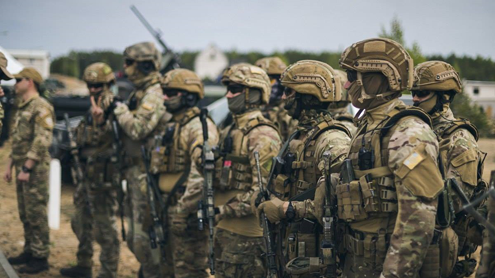
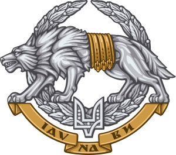
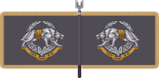
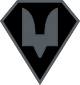
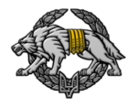

Oкремий рід сил Збройних сил України, до складу якого входять частини спеціального призначення і підрозділи інформаційно-психологічних спеціальних операцій, що комплектуються спеціально навченими фахівцями, які мають спеціальні можливості у сферах розвідки, прямих акцій та військової підтримки для виконання складних, небезпечних, інколи політично чутливих операцій, що проводить командування ССО.

-
Емблема сил спеціальних операцій

-
Прапор сил спеціальних операцій

-
-
Нарукавний знак

-
Беретний знак

Історія створення Сил спеціальних операцій ЗС України бере свій початок з 2007 року. Тоді було видано одну з останніх Директив Міністра оборони України А. Гриценка щодо формування Управління Сил спеціальних операцій, як структурного підрозділу Генерального штабу ЗС України. Очолив Управління розробник його концепції — Юрій Серветник. Підрозділ проіснував до 2012 року.
Спроба анексії Криму Росією і війна на Донбасі прискорили процес формування ССпО. Завдяки бойовому досвіду, набутому військово-політичним керівництвом та підрозділами спеціального призначення, з'явилась необхідність відокремлення Сил спеціальних операцій в окремий рід сил.
20 квітня 2015 року начальник Управління спеціальних операцій Генштабу Сергій Кривонос повідомив, що у Генеральному штабі ЗСУ підтримали пропозицію створити окрему структуру Сил спеціальних операцій, котра підпорядковуватиметься Міністерству оборони України.
Створення Сил спеціальних операцій було передбачено у Стратегічному оборонному бюлетені України 2016 року, розрахованому на період до 2020 року.
5 січня 2016 року Міністр оборони призначив командувачем Управління Сил спеціальних операцій (ССО) генерал-майора Ігоря Луньова, який раніше був першим заступником командувача Високомобільних десантних військ. Чинний начальник Управління спеціальних операцій Генштабу Сергій Кривонос призначений першим заступником командувача ССО.
14 травня 2016 року відбувся перший випуск 29 інструкторів навчально-тренувального центру Сил спеціальних операцій кваліфікаційного курсу в рамках програми Об'єднаної багатонаціональної групи (США, Литва, Латвія, Естонія).
16 червня 2016 року Верховна Рада дозволила створити сили спеціальних операцій та високомобільні десантні війська. За відповідний законопроєкт проголосували 256 народних депутатів. Законом вносяться зміни до закону про збройні сили України, якими визначається, що до окремих родів військ належать Сили спеціальних операцій Збройних Сил України, Високомобільні десантні війська Збройних Сил України.
26 липня 2016 року Президент Петро Порошенко підписав Указ «Про День Сил спеціальних операцій Збройних Сил України». Глава держави зазначив, що враховуючи важливу роль Сил спеціальних операцій Збройних Сил України у забезпеченні обороноздатності держави та героїзм особового складу, виявлений під час проведення антитерористичної операції на Сході України, ухвалив рішення встановити в Україні День Сил спеціальних операцій ЗСУ, який відзначатиметься щорічно 29 липня.
29 липня 2017 року Міністр оборони України повідомив про збільшення фінансування сил спеціальних операцій, зокрема додаткові кошти планується направити на розбудову навчального центру.
3 березня 2018 року Президент Петро Порошенко затвердив Положення про Сили спеціальних операцій Збройних Сил України.[11]
У 2019 році загін українських Сил спеціальних операцій у форматі Special Operation Task Group пройшов сертифікацію і з 2020 року заступив на бойове чергування у складі підрозділів NATO Response Force.
24 червня 2019 року вперше в історії підрозділ з країни — не члена НАТО пройшов сертифікацію як підрозділ ССО (SOF) і має право залучатися в Сили швидкого реагування НАТО. Ним став 140-й центр Сил спеціальних операцій ЗС України. Також українських офіцерів ССО залучали до оцінювання підрозділу хорватських спецпризначенців за вимогами NRF.
В червні 2019 року вперше було оголошено на набір на Кваліфікаційний курс інформаційних та психологічних операцій (ІПсО).
24 липня 2019 року генерал-лейтенант Ігор Луньов дав брифінг. На ньому він повідомив, що в ССО на 100 % замінено зразки снайперських гвинтівок радянського виробництва. Вітчизняні гвинтівки UAR-10, американські SAVAGE, BARRETT значно підвищили якість виконання бойових завдань підрозділів спецпризначення і ведення контрснайперської боротьби на Сході України. Він озвучив плани ССО — впровадити новий Кваліфікаційний курс для підрозділів інформаційно-психологічних операцій, завершити формування авіаційної та морської компоненти й розпочати підготовку пілотів та екіпажів у відповідності до поточних завдань.
Функції, завдання та особливості діяльності Сил спеціальних операцій Збройних Сил України визначаються законами України та Положенням, яке затверджує Президент України.
Органи військового управління та військові частини розвідки, Сил спеціальних операцій Збройних Сил України відповідно до закону можуть залучатися до заходів добування розвідувальної інформації з метою підготовки держави до оборони, підготовки та проведення спеціальних операцій та/або спеціальних дій, забезпечення готовності Збройних Сил України до оборони держави. Сили спеціальних операцій Збройних Сил України здійснюють ведення спеціальної розвідки.
ЗУ «Про оборону України» дає визначення спеціальна операція — сукупність узгоджених і взаємопов'язаних за метою, завданнями, місцем та часом спеціальних дій підрозділів Сил спеціальних операцій Збройних Сил України, спрямованих на створення умов для досягнення стратегічних (оперативних) цілей, які проводяться за єдиним замислом самостійно або у взаємодії з військовими частинами, підрозділами Збройних Сил України, інших військових формувань, правоохоронних органів України та інших складових сил оборони для виконання завдань.
Спеціальна розвідка — комплекс заходів і дій для добування, опрацювання і доведення розвідувальної інформації в інтересах підготовки та ведення (підтримки) операцій, бойових і спеціальних дій з використанням визначених способів добування відомостей, в тому числі встановлення конфіденційного співробітництва з особами за добровільною згодою.
До типових завдань ССО відносяться:
-
Рейди та сучасні бойові дії;
-
Психологічні операції (Psy-Ops);
-
Добуття розвідувальної інформації за лінією фронту;
-
Робота «цивільної адміністрації» (залучення на свій бік населення);
-
Створення агентурних мереж;
-
Навчання іноземних армій, поліційних і безпекових сил (так зване «примноження сили»);
-
Пошук, евакуація й доставлення полонених, заручників;
-
Медична допомога;
-
Впровадження в структуру спецслужб і військових організацій з метою шпигунства або знищення людей, що представляють загрозу державі (в тому числі і на території інших держав);
-
Підготовка до переворотів, повалення режимів;
-
Виявлення, ідентифікація та визначення цілей для власних засобів ураження;
-
Антитерористичні операції.
Відомості про особовий склад Сил спеціальних операцій Збройних Сил України, а також про осіб, які співпрацюють або раніше співпрацювали з ними на конфіденційній основі, становлять державну таємницю і підлягають захисту відповідно до Закону України «Про державну таємницю». Тому подана нижче структура Сил спеціальних операцій базується на інформації з відкритих джерел і може містити певні неточності.